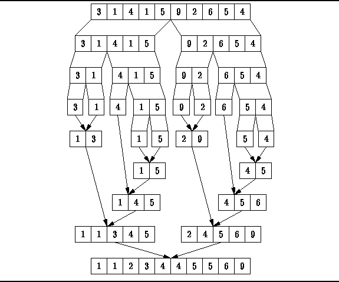

Data Structures and Algorithms
with Object-Oriented Design Patterns in Java
Data Structures and Algorithms
with Object-Oriented Design Patterns in JavaThe fourth class of sorting algorithm we consider comprises algorithms that sort by merging . Merging is the combination of two or more sorted sequences into a single sorted sequence.
Figure  illustrates the basic, two-way merge operation.
In a two-way merge, two sorted sequences are merged into one.
Clearly, two sorted sequences each of length n
can be merged into a sorted sequence of length 2n
in O(2n)=O(n) steps.
However in order to do this,
we need space in which to store the result.
That is, it is not possible to merge the two sequences in place
in O(n) steps.
illustrates the basic, two-way merge operation.
In a two-way merge, two sorted sequences are merged into one.
Clearly, two sorted sequences each of length n
can be merged into a sorted sequence of length 2n
in O(2n)=O(n) steps.
However in order to do this,
we need space in which to store the result.
That is, it is not possible to merge the two sequences in place
in O(n) steps.
Sorting by merging is a recursive, divide-and-conquer strategy. In the base case, we have a sequence with exactly one element in it. Since such a sequence is already sorted, there is nothing to be done. To sort a sequence of n>1 elements:
illustrates the operation
of the two-way merge sort algorithm.

Figure: Two-way merge sorting.
 Copyright © 1998 by Bruno R. Preiss, P.Eng. All rights reserved.
Copyright © 1998 by Bruno R. Preiss, P.Eng. All rights reserved.